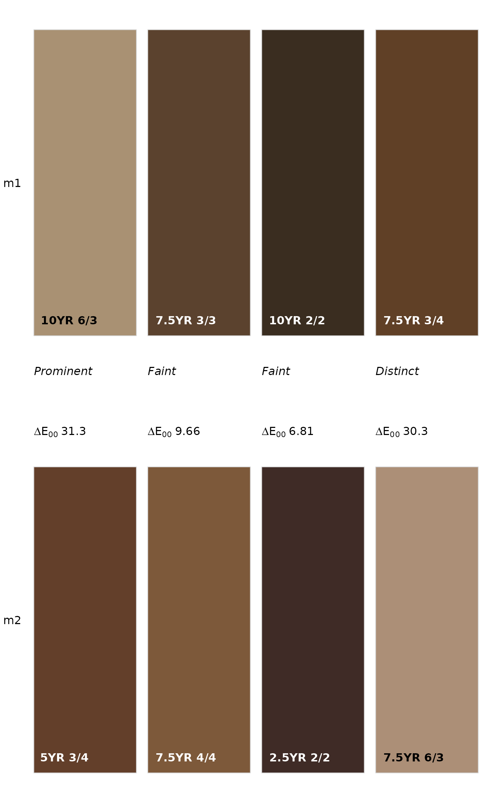

A simple display of two sets of colors, NCSS color contrast class and CIE delta-E00.
Usage
colorContrastPlot(
m1,
m2,
col.cex = 1,
col.font = 2,
d.cex = 1,
cc.font = 3,
dE00.font = 1,
labels = c("m1", "m2"),
label.cex = 1,
label.font = 1,
printMetrics = TRUE,
...
)Arguments
- m1
first set of Munsell colors for comparison (e.g. '5YR 3/2')
- m2
second set of Munsell colors for comparison
- col.cex
scaling factor for color labels
- col.font
font for color labels
- d.cex
contrast for contrast metric labels
- cc.font
font for contrast class
- dE00.font
font for delta-E00
- labels
labels for compared colors, vector length 2
- label.cex
scaling factor for labels
- label.font
font for labels
- printMetrics
logical, print metrics between color swatches
- ...
further arguments to
colorspace::swatchplot
Examples
# keep examples from using more than 2 cores
data.table::setDTthreads(Sys.getenv("OMP_THREAD_LIMIT", unset = 2))
# two sets of colors to compare
m1 <- c('10YR 6/3', '7.5YR 3/3', '10YR 2/2', '7.5YR 3/4')
m2 <- c('5YR 3/4', '7.5YR 4/4', '2.5YR 2/2', '7.5YR 6/3')
# contrast metrics
colorContrast(m1, m2)
#> m1 m2 dH dV dC dE00 cc
#> 1 10YR 6/3 5YR 3/4 2 3 1 31.286374 Prominent
#> 2 7.5YR 3/3 7.5YR 4/4 0 1 1 9.657423 Faint
#> 3 10YR 2/2 2.5YR 2/2 3 0 0 6.814101 Faint
#> 4 7.5YR 3/4 7.5YR 6/3 0 3 1 30.261643 Distinct
# graphical display
colorContrastPlot(m1, m2)
